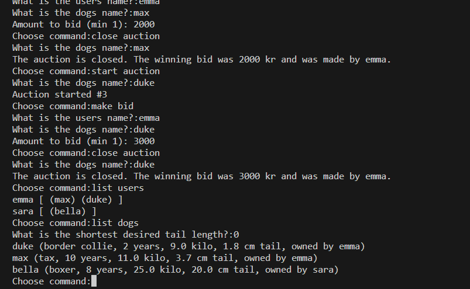

Hundregister
Ett kommandostyrt javaprojekt

Detta är ett simpelt, kommandostyrt javaprogram som låter användare hantera hundar i ett hundregister. Genom att registrera användare och hundar kan man starta en auktion, lägga bud på vald hund, och assignera hunden till den vinnande användaren. Detta utförs med ett antal olika objekt som interagerar med varandra och använder sig av enkla ArrayLists för att hålla reda på data. Programmet redovisar problemlösning med hjälp av metoder och sorteringsalgoritmer i en objektorienterad mijlö.
Det här projektet var en del av den introducerande kursen till programmering under min utbildning, och gav en god grund för de grundläggande koncepten i Java.